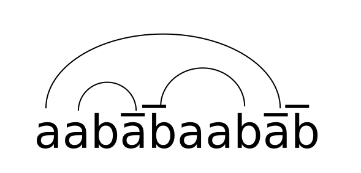

Lengths, Free groups and Computer Proofs
A PolyMath adventure
Siddhartha Gadgil
Indian Institute of Science
joint with
the rest of (spontaneous) PolyMath 14
The PolyMath 14 participants
- Tobias Fritz, MPI MIS
- Siddhartha Gadgil, IISc, Bangalore
- Apoorva Khare, IISc, Bangalore
- Pace Nielsen, BYU
- Lior Silberman, UBC
- Terence Tao, UCLA
- On Saturday, December 16, 2017, Terrence Tao posted on his blog a question, which Apoorva Khare
had asked him.
Is there a homogeneous, (conjugacy invariant) length function on the free group on two
generators?
- Six days later, this was answered in a collaboration involving several
mathematicians (and a computer).
- This the story of the answer and its discovery.
Length functions
- Fix a group $G$, i.e. a set with an associative product with inverses.
- A pseudo-length function $l: G \to [0, \infty)$ is a function such
that:
- $l(e) = 0$.
- $l(g^{-1}) = l(g)$ , for all $g \in G$.
- (Triangle inequality) $l(gh) \leq l(g) + l(h)$, for all $g,h\in G$.
- A length function is a pseudo-length function such that $l(g) > 0$
whenever $g\neq e$ (positivity condition).
- A pseudo-length function $l$ is said to be conjugacy invariant if $l(ghg^{-1})=l(h)$ for all $g,
h \in G$.
- $l$ is said to be homogeneous if $l(g^n) = nl(g)$ for all $g \in G$.
- On the group $\mathbb{Z}^2$ of pairs of integers, a (conjugacy invariant)
homogeneous length function is given by $l_{\mathbb{Z}^2}((a,b)) = |a| + |b|$.
- On the other hand, if $l$ is homogeneous and $g^n=e$ then $l(g)=0$ as $nl(g) =
l(g^n) = 0$.
- Thus, if $G$ has torsion, i.e., $\exists g\neq e\in G$, such that
$g^n =0$ for some $n > 0$, then there is no homogeneous length function on $G$.
Free group $\mathbb{F}_2$ on $\alpha$, $\beta$
- Consider words in four letters $\alpha$, $\beta$, $\bar{\alpha}$ and
$\bar{\beta}$.
- We multiply words by concatenation, e.g. $\alpha\beta\cdot\bar{\alpha}\beta =
\alpha\beta\bar{\alpha}\beta$.
- Two words are regarded as equal if they can be related by cancelling adjacent
letters that are inverses, e.g. $\alpha\beta\bar{\beta}\alpha\beta = \alpha\alpha\beta$.
- This gives a group; e.g.
$(\alpha\bar{\beta}\alpha\beta\beta)^{-1} =
\bar{\beta}\bar{\beta}\bar{\alpha}\beta\bar{\alpha}$.
- The word length on $\mathbb{F_2}$ is the length of the shortest word
representing an element.
Pullback pseudo-lengths
- We define $ab: \mathbb{F}_2 \to \mathbb{Z}^2$ by total exponents (ignoring
order), e.g. $ab(\alpha\alpha\beta\bar{\alpha}\bar{\beta}\alpha\bar{\beta}) = (2, -1)$.
- We get a pullback pseudo-length $l$ on $\mathbb{F}_2$ by $l_{ab}(g) =
l_{\mathbb{Z}^2}(ab(g))$.
- As $l_{\mathbb{Z}^2}$ is homogeneous, so is $l_{ab}$.
- However, this is not a length function as $l_{ab}([\alpha,
\beta])=0$, where $[g, h] = ghg^{-1}h^{-1}$ (violating positivity).
- More generally, every group $G$ has an Abelianization $ab: G \to G/[G, G]$.
The Main results
- Question: Is there a homogeneous length function on the free
group on two generators?
- Answer: No; we in fact describe all
homogeneous pseudo-lengths.
-
Theorem: Any homogeneous pseudo-length function on a group $G$ is the pullback
of a pseudo-length on its Abelianization $G / [G, G]$.
- Corollary: If $G$ is not abelian (e.g. $G = \mathbb{F}_2$)
there is no homogeneous length function on $G$.
- In fact, every homogeneous pseudo-length is the pullback of a norm on
a vector space.
- A couple of reductions were made quickly
- Homogeniety $\implies$ conjugacy-invariance.
- $l(g^2) = 2l(g) \forall g\implies $ homogeneity.
-
For attempting to contradicting positivity, increasingly sharp upper bounds were found
- using conjugacy invariance and homogeneity,
- e.g. for $l([x, y])$ in terms of $l(x)$ and $l(y)$.
- combining using convexity
-
Various constructions were attempted,
- pulling back from other quotients,
-
upgrading using homogenization etc.;
- I considered non-crossing matchings.
Non-crossing matchings

- Given a word in $\mathbb{F}_2$, we consider matchings such that
- letters are paired with their inverses,
- there are no crossings
- The norm is the number of unmatched letters.
The Watson-Crick length
- For $g\in \mathbb{F}_2$, define the Watson-Crick length $l^{}_{WC}(g)$
to be the minimum number of unmatched letters over all non-crossing matchings.
- $l^{}_{WC}$ is
unchanged under cancellation (hence well-defined
on $\mathbb{F}_2$) and
conjugacy invariant.
- Indeed the length $l_{WC}$ is maximal
among normalized conjugacy-invariant
length functions.
- However, if $g=\alpha[\alpha, \beta]$, then
$l^{}_{WC}(g^2)= 4$, but
$l^{}_{WC}(g) = 3$, violating homogeneity.
The great bound chase
- By Tuesday morning, most people were convinced that there are no homogeneous
length functions on the free group.
- There was a steady improvements in the combinatorial/analytic bounds on
$l([\alpha, \beta])$.
- These seemed to be stuck above 1 (as observed by Khare) - but eventually broke
this barrier (work of Fritz, Khare, Nielsen, Silberman, Tao).
- At this stage, my approach diverged.
Computer Assisted proofs
- We can recursively compute $l_{WC}(g)$ for words $g$.
- By maximality, this gives an upper bound on all conjugacy-invariant normalized lengths.
- This can be combined with using homogenity with ad-hoc (or expert guided) choices.
- Using this, I obtained an upper bound of about $0.85$ on $l(\alpha, \beta)$.
- This was upgraded to a (computer) checkable proof.
- On Thursday morning, I posted an in
principle human readable proof of a bound.
- The computer-generated proof was studied by Pace Nielsen, who extracted the internal
repetition trick.
- This was extended by Nielsen and Fritz and abstracted by Tao to show:
if $x\sim wy\sim zw$ then $l(x)\leq \frac{l(y)+ l(z)}{2}.$
- From this Fritz
obtained the key lemma:
- Let $f(m, k) = l(x^m[x, y]^k)$. Then $f(m, k) \leq\frac{f(m-1, k) + f(m+1,
k-1)}{2}$.
- A probabilistic argument of Tao finished the proof.
Algorithmic bounds for
Length functions
- Let $l$ be a normalized, conjugacy-invariant length function.
- Lemma 1: $l(xg) \leq l(g) + 1$ for $x \in \{\alpha, \beta, \bar{\alpha},
\bar{\beta}\}$, $g \in \mathbb{F}$.
- Lemma 2: $l(xh_1x^{-1}h_2) \leq l(h_1) + l(h_2)$ for $x \in \{\alpha, \beta,
\bar{\alpha}, \bar{\beta}\}$, $h_1, h_2 \in \mathbb{F}$.
- $l(xh_1x^{-1}h_2) \leq l(xh_1x^{-1}) + l(h_2)$ by the triangle inequality.
- $l(xh_1x^{-1}) = l(h_1)$ by conjugacy invariance.
- Based on these we define a function $L$ on finite words in $\{\alpha, \beta, \bar{\alpha},
\bar{\beta}\}$ giving an upper bound on $l$.
- We define a function $L$ on finite words in $\{\alpha, \beta, \bar{\alpha}, \bar{\beta}\}$
recursively as follows.
- We define $L(e) = 0$ for the empty word $e$.
- For a word $g = xh$, $x \in \{\alpha, \beta, \bar{\alpha}, \bar{\beta}\}$, recursively:
- let $L_0 = L(h) + 1$;
- let $\mathcal{L} = \{L(h_1) + L(h_2) : h = h_1x^{-1}h_2\}$;
and define $L(g) = \min(\{L_0\}\cup \mathcal{L}) $.
- Theorem: If $l$ is a normalized, conjugacy-invariant length function, then
$l(g)\leq L(g)$ for all $g$.
- In practice, we must memoize (cache).
-
For obtaining bounds also using homogeneity, we use auxiliary elements $g_i$
and powers $n_i$.
-
By homogeneity we get $l(g_1)\leq \frac{L(g_1^{n_1})}{n_1}$, which is often an improved bound over
$L(g_1)$.
-
Further, we can use such improved bounds recursively to compute bounds for subsequent elements,
for instance if $g_1$ is a subword of $g_2^{n_2}$.
- In practice, we used words of the form $\alpha(\alpha\beta\bar\alpha\bar\beta)^k$ with $k=1, 2,
6$ and $n_i$'s, $n$ from $1$ to $20$.
- We bound $l([\alpha, \beta])$ by $\min_{1\leq n\leq 20} L([\alpha, \beta]^n)/n$.
Computer generated proofs
- In foundations based on Dependent Type Theory, statements, proofs,
algorithms are all first-class: they
can be arguments and results of functions and elements of collections.
- A program is a function, and its value (result) can be (a structure with component) a proof.
-
I upgraded the algorithms to
return bounds with proofs in domain-specific foundations; the proofs were exported to
a human readable format.
-
Here we will illustrate using Lean 4.
-
First we address two issues: was the finding of the proof a fluke & rounding-off errors; by replicating.